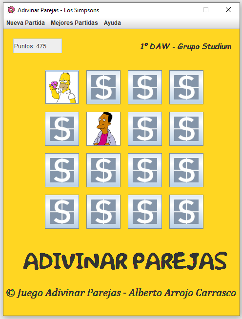
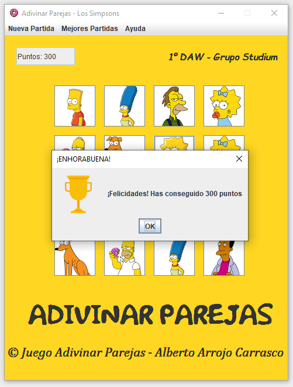
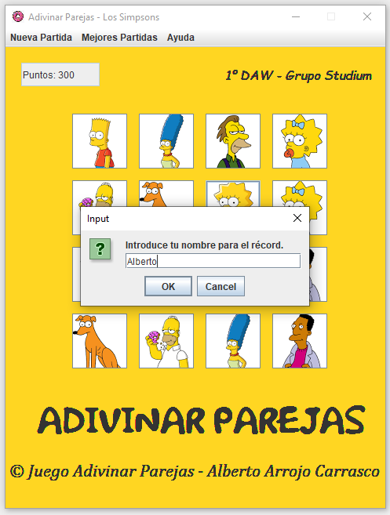
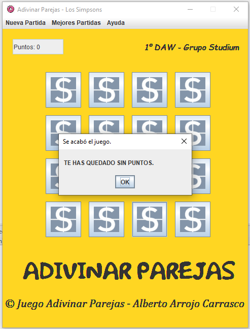
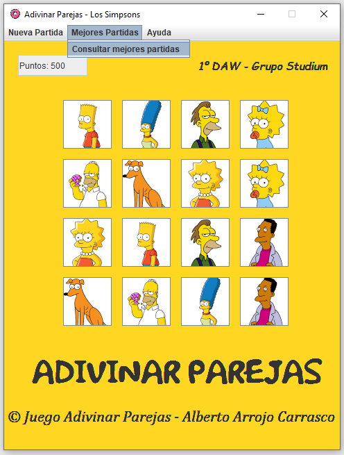
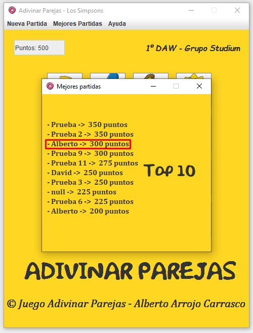
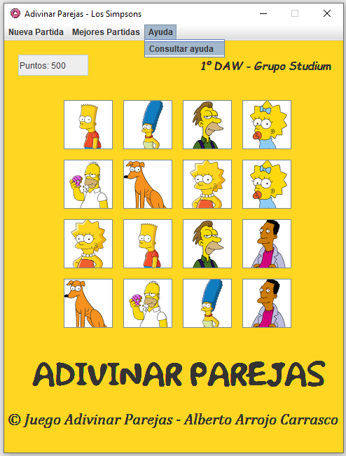

En el menú principal disponemos de tres apartados:
Si fallamos buscando la pareja adecuada, el juego nos restará 25 puntos.
Al descubir todas las parejas, nos aparecerá un mensaje diciéndonos que hemos ganado.
Cuando pulsemos “OK”, tendremos que poner nuestro nombre para poder insertarlo en la lista de mejores partidas.
Si nos quedamos sin puntos, hemos perdido. Nos aparecerá lo siguiente:
Después de aceptar, volveremos al Menú Principal.
En el menú del juego también podemos consultar las mejores partidas.
 En el menú del juego también podemos consultar el menú de ayuda.
